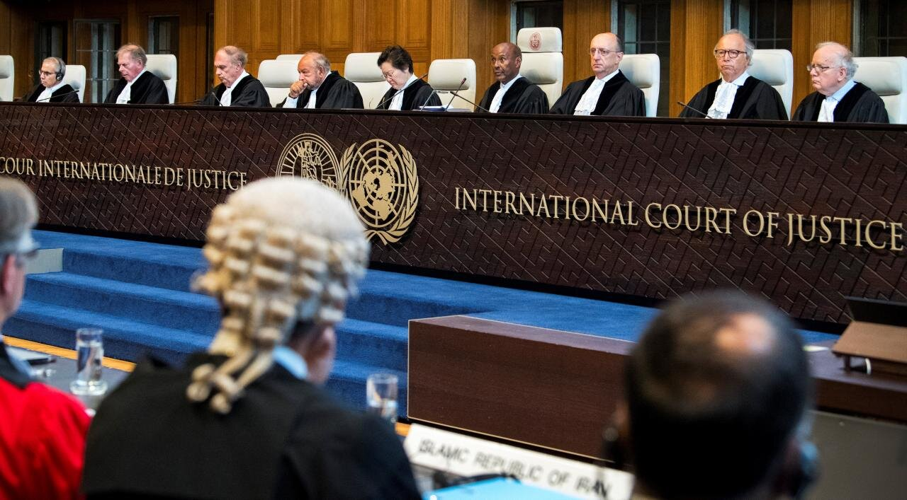
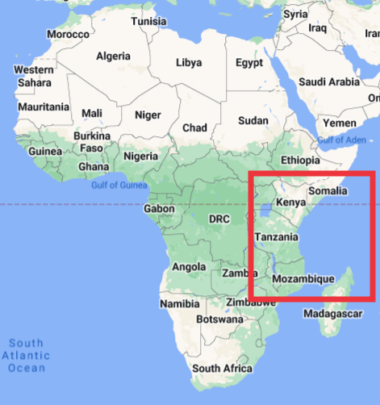
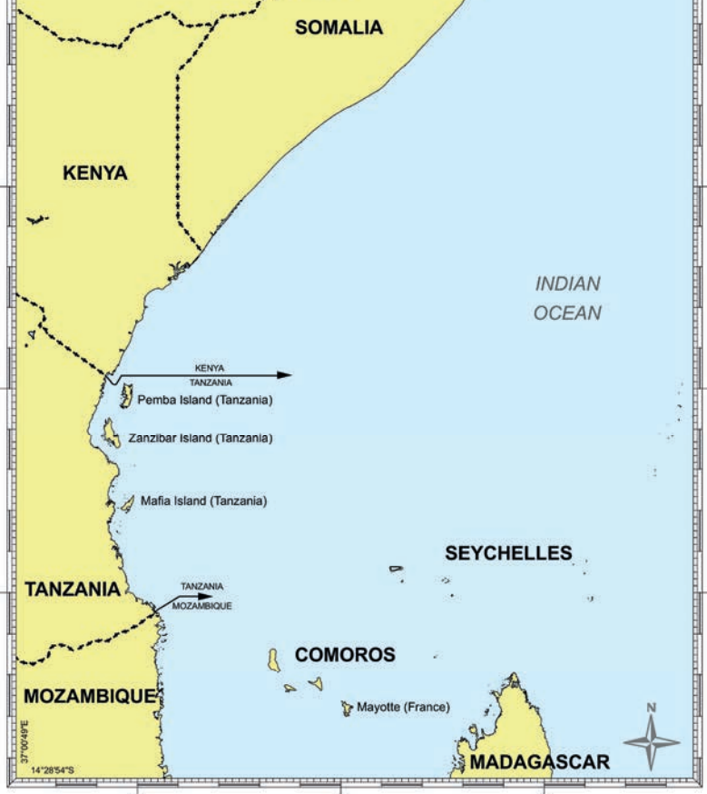
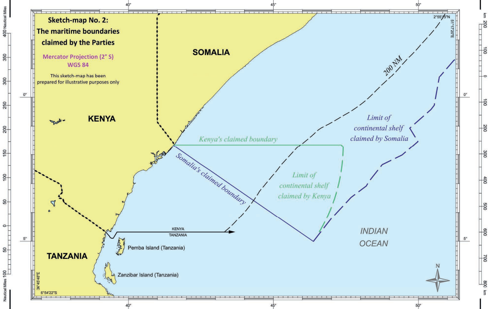
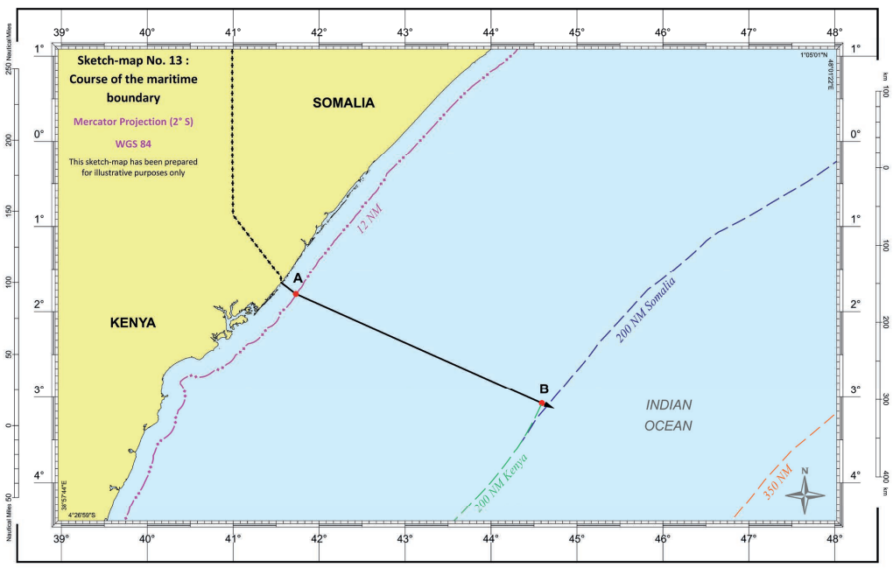
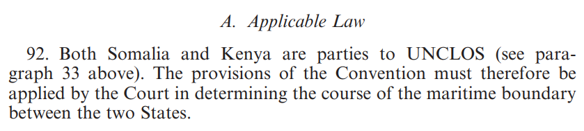
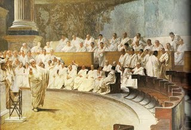
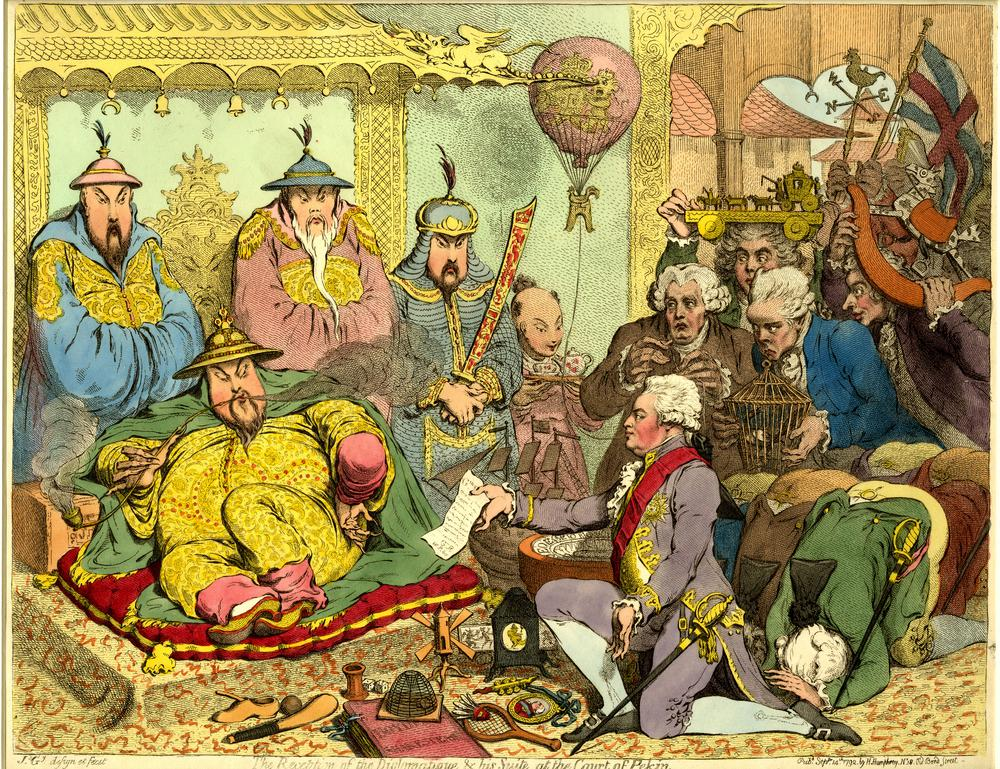
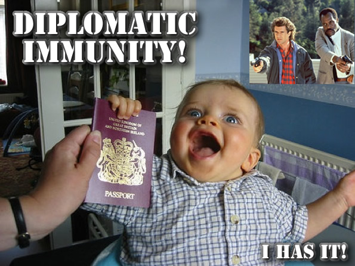

Today’s Agenda
Section 1: Analyzing International Institutions
Sources of International Law
- Custom
Justin Leinaweaver (Fall 2026)


Antonio Cassese (1937 - 2011)
Judge, international lawyer and professor
First President of the International Criminal Tribunal for the former Yugoslavia
First President of the Special Tribunal for Lebanon
Cassese, A. (2005). Chapter 8: International Law-Creation: Custom. International Law.

The ICJ Settles Legal Disputes


The ICJ Settles Legal Disputes



The Statute of the International Court of Justice (ICJ)
Article 38
- The Court, whose function is to decide in accordance with international law such disputes as are submitted to it, shall apply:
international conventions, whether general or particular, establishing rules expressly recognized by the contesting states;
international custom, as evidence of a general practice accepted as law;
the general principles of law recognized by civilized nations;
subject to the provisions of Article 59, judicial decisions and the teachings of the most highly qualified publicists of the various nations, as subsidiary means for the determination of rules of law.
The Statute of the International Court of Justice (ICJ)
Article 38
- The Court, whose function is to decide in accordance with international law such disputes as are submitted to it, shall apply:
international conventions, whether general or particular, establishing rules expressly recognized by the contesting states;
international custom, as evidence of a general practice accepted as law;
the general principles of law recognized by civilized nations;
subject to the provisions of Article 59, judicial decisions and the teachings of the most highly qualified publicists of the various nations, as subsidiary means for the determination of rules of law.
The Statute of the International Court of Justice (ICJ)
Article 38
- The Court, whose function is to decide in accordance with international law such disputes as are submitted to it, shall apply:
international conventions, whether general or particular, establishing rules expressly recognized by the contesting states;
international custom, as evidence of a general practice accepted as law;
the general principles of law recognized by civilized nations;
subject to the provisions of Article 59, judicial decisions and the teachings of the most highly qualified publicists of the various nations, as subsidiary means for the determination of rules of law.
The Long Roots of Customary Law
Ancient Indian Maxim: “Immemorial Custom is transcendental Law”
The Long Roots of Customary Law

Ancient Roman Maxim: “beaten path, safe path”
The Long Roots of Customary Law
Medieval Canon Law: “Custom or law is a right established by habits”
Creating Customary Law
Opinio necessitatis
No “strong and consistent” opposition
Opinio juris

Customary International Law: Diplomatic Immunity

Opinio necessitatis
No “strong and consistent” opposition
Opinio juris
How does the traditional process change when humanitarian issues are at stake?
Opinio necessitatis
No “strong and consistent” opposition
Opinio juris
How does the traditional process change when humanitarian issues are at stake?
Opinio necessitatisThe “laws of humanity”No “strong and consistent” opposition(?)Opinio juris
Do customary rules require the support of all states at their birth?
Opinio necessitatis (or the “laws of humanity”)
No “strong and consistent” opposition
Opinio juris
The Nuclear Taboo (Tannenwald 2005)
For Next Class
Sources of International Law: Treaties
Excerpts from Cassese (2005) and Hollis (2012)
Bring The Vienna Convention on the Law of Treaties (1969)
Canvas: Find us an interesting treaty to discuss